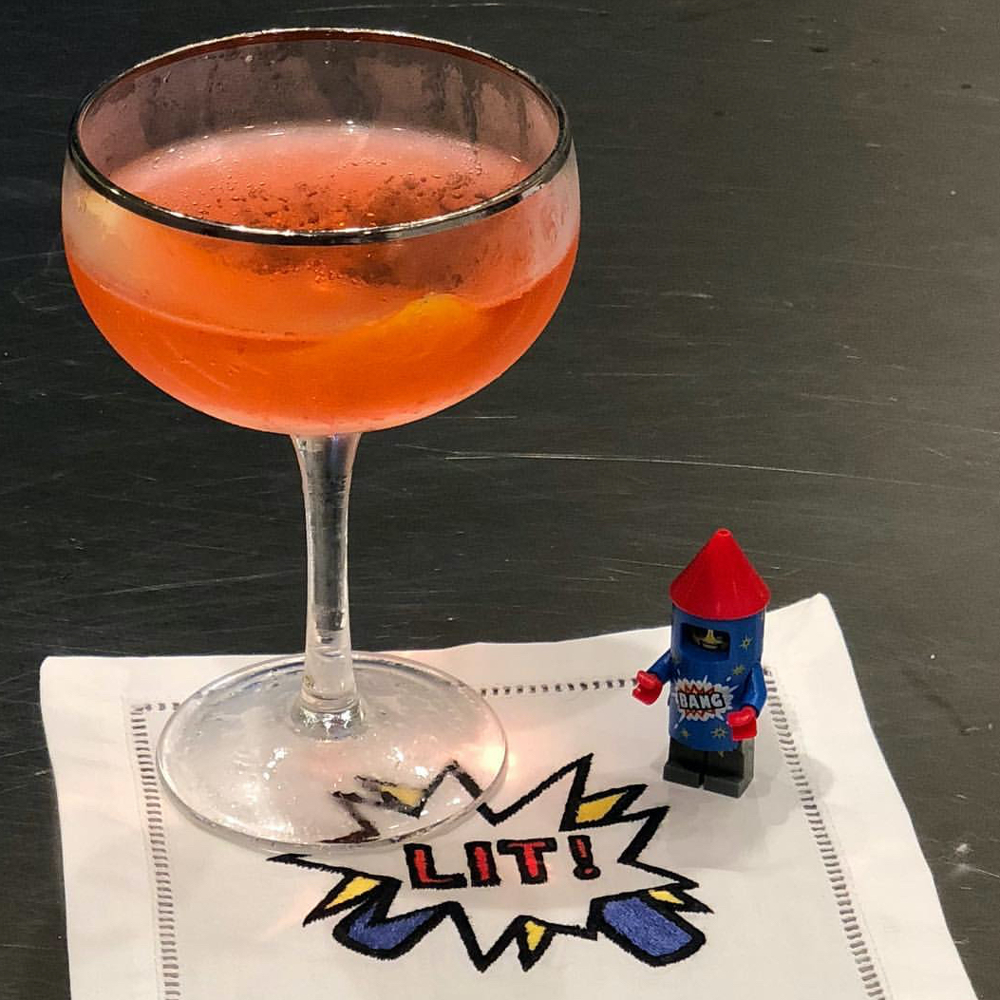

In a cocktail shaker, muddle 7 of the mint leaves with the Simple Syrup, then add the gin, lime juice, bitters and salt. Fill the shaker with ice and shake well.
Agave Kiss
3 blackberries
1 lime wedge
1 cup ice
1 1/2 ounces reposado tequila
3/4 ounce fresh lime juice
3/4 ounce simple syrup
1/2 ounce Chambord
1 ounce chilled club soda
Skewer one blackberry and the lime wheel on a pick. In a cocktail shaker, muddle the remaining 2 blackberries. Add the ice, tequila, lime juice, Simple Syrup and Chambord. Shake well and pour into a rocks glass. Stir in the club soda and garnish with the skewered blackberry and lime wheel.

Voyager Cocktail
2 ounces gold rum
1/2 ounce lime juice
1/2 ounce Benedictine
1/2 ounce Falernum
Dash of angostura bitters
1 lime wedge
In a cocktail shaker, shake all ingredients with ice and strain into an ice-filled short glass. Garnish with a lime wedge.